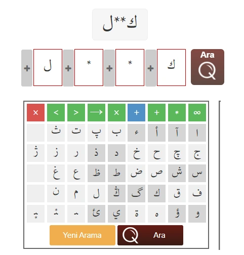

Traditional dictionaries are of little use when the letters at the beginning or in the middle of a word cannot be read: without the headword there is nothing to look up. LexiQamus was built to solve that problem; see What is LexiQamus? for details.
It was a first in its field: until then, no digital tool existed for deciphering unreadable words. The first version consisted of a single tool, the Word Solver.
For a researcher who could read only a few letters of a word, LexiQamus showed almost instantly a word that might have taken days to find by leafing through comprehensive dictionaries. It soon earned the confidence of many respected institutions in Turkey and around the world.
Word Solver
The researcher enters the letters they can read into boxes, according to their position in the word, and leaves a marker for the ones they cannot. The search algorithm takes the readable letters and the symbols entered for the unreadable characters, and lists the possible words that fit the criteria.

- Letters were entered into the boxes with the on-screen keyboard.
- The signs * and ∞ were used for unreadable letters: * stands for a single letter, ∞ for an unknown number of letters.
- The bottom row of the keyboard held starred characters for the toothed letters whose dots could not be read.
- The keyboard had only the connected form of ه, and ی appeared with its dots.